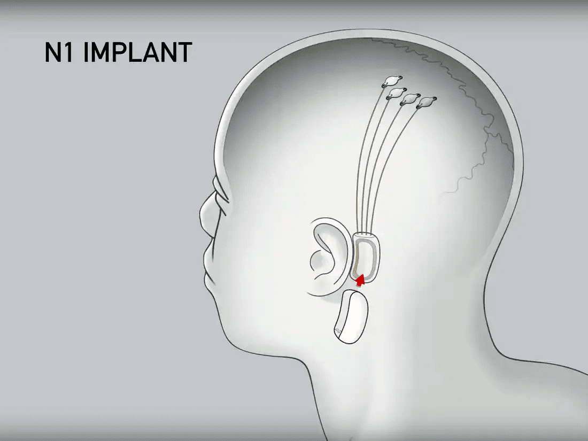
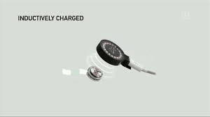

Noticias de Tecnología
En esta sección veras lo nuevo y último en tecnología como frameworks, librerias, lenguajes de programación, startups y más...El Chip Cerebral de Elon Musk
El 28 de agosto del 2020 el Empresario y multimillonario Elon Musk presento su más reciente mejora el Chip Cerebral de Neuralink, la cual promete muchas mejoras para la humanidad y la tecnología.
Ahora bien tal vez se estan preguntando ¿Qué es Neuralink?, bueno Neuralink Corporation es una empresa de neurotecnología especializada en el desarrollo de interfaces cerebro-computadora, implantables, fundada por Elon Musk.
El chip Neuralink pretende curar enfermedades nuerológicas como: ansiedad, insomnio, pérdida de memoria, pérdida de audición, ceguera, parálisis, Adicción, despresión, daño cerebral, entre otros., Asi lo menciono Elon Musk en su conferencia.
Caracteristicas del Chip: En su primera versión el chip tenia cables y el procedimiento quirúrgico era muy complejo. Sin embargo, en la actualidad el chip no tiene cables y tiene un tamaño de 23 mm x 8 mm, además existe una máquina especializada que se encarga de su implantación en nuestro cerebro.
Para graficarlo y entenderlo mejor veamos la siguiente imagen esta es la versión en donde habian cables, en lo particular causa mucho temor pensar en el procedimiento que hay que seguir.
Sin embargo en la conferencia que dio el 28 de Agosto, el chip tiene casi el tamaño de una moneda y es manejado todo mediante Bluetooh. En la imagen que puedes visualizar a continuación se puede ver de manera general el procedimiento.
Además el chip de Neuralink tinene una velocidad de datos de megabit e inalámbrica, dura todo el dia y se carga por las noches con un dispotitivo que se coloca al exterior de la cabeza.
El chip de Neuralink pretende grabar y monitorizar las señales cerebrales que ocurren en nuestro cerebro. Elon Musk menciono en la conferencia que dio:
"No estamos tratando de recaudar dinero (...) el principal propósito de esta presentación es convencer a la gente apropiada para que venga a trabajar con Neuralink y nos ayude a hacer el producto asequible y confiable para que cualquiera que quiera uno lo pueda tener".